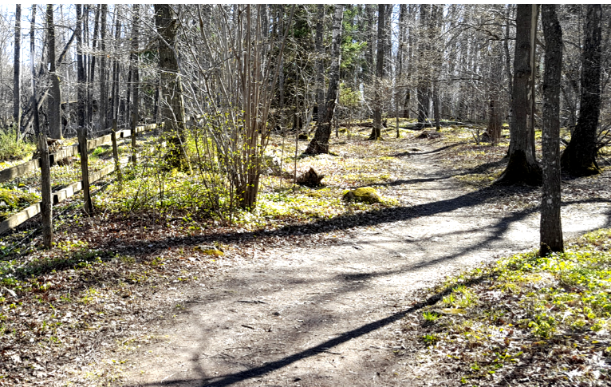

اختيار المسار
ليس دائمًا الطريق الأقصر هو الأسرع أو الأفضل عند التوجيه. غالبًا ما توجد عدة طرق بديلة للانتقال من مكان إلى آخر، وهناك عوامل كثيرة يجب أخذها في الاعتبار عند اختيار الطريق. قد تضطر إلى الصعود أو النزول من تل مرتفع، أو قد يكون هناك عائق في الطريق، مثل جدول ماء أو منحدر حاد، إذا اخترت الطريق الأقصر. في مثل هذه الحالات، قد يكون من الأفضل التجاوز من حول العائق بدلاً من المرور فوقه.

أحيانًا قد يكون الطريق الأقصر هو المرور مباشرة عبر غابة دون علامات واضحة، وفي هذه الحالة قد يكون من السهل أن تضل طريقك وتفوت المكان الذي تريد الوصول إليه. في مثل هذه الحالات، قد يكون من الأفضل أن تأخذ طريقًا أطول قليلاً، يكون من الأسهل العثور عليه من خلال اتباع خط إرشادي مثل جدول ماء أو خط كهرباء.
اختيار الطريق المناسب يعني أن تأخذ جميع العوامل في الاعتبار وتوازن بينها، بحيث تشعر بالأمان في إيجاد الطريق الصحيح وفي نفس الوقت تتحرك بأسرع ما يمكن.